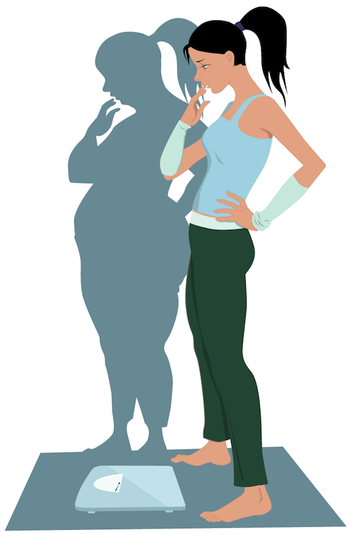

Trastornos de la conducta alimentaria

¿Qué son los trastornos de la conducta alimentaria?
Los trastornos de la conducta alimentaria son problemas relacionados con la forma en que comen las personas. Pueden ser muy perjudiciales para la salud de la persona, sus emociones y sus relaciones personales. Hay varios tipos distintos de trastornos de la conducta alimentaria.
¿Cuáles son los distintos tipos de trastornos de la conducta alimentaria?
Los tipos más frecuentes de trastorno de la conducta alimentaria son la anorexia nerviosa, la bulimia nerviosa, el trastorno por atracón y el trastorno por evitación/restricción de la ingesta (ARFID, por sus siglas en inglés).
La anorexia nerviosa. Las personas con anorexia nerviosa:
comen muy poco a propósito Esto lleva a que tengan un peso corporal muy bajo.
tienen pavor a ganar peso. No soportan la idea de estar gordas.
Tienen una imagen corporal distorsionada. Se siguen viendo gordas a pesar de estar muy delgadas.
Las personas con anorexia nerviosa son muy estrictas sobre qué deben comer y en qué cantidad. Pueden estar pensando en las calorías constantemente.
Para perder peso, muchas personas con anorexia nerviosa ayunan o hacen demasiado ejercicio. Otras pueden usar laxantes, diuréticos, o enemas.
La bulimia nerviosa. Las personas con bulimia nervios a:
-
Comen demasiado y sienten que pierden el control para dejar de comer. Esto se llama comer por atracón.
-
Hacen cosas para compensar o corregir la conducta de comer en exceso. Pueden vomitar a propósito después de haber comido demasiado. Esto se conoce como purgarse. Para impedir la ganancia de peso pueden usar laxantes, diuréticos, pastillas para perder
peso, el ayuno o hacer mucho ejercicio físico.
se juzgan a sí mismas basándose solo en su aspecto corporal y en su peso
-
Las personas con bulimia nerviosa comen mucho más (durante un período determinado de tiempo) que lo que come la mayoría de la gente. Si una persona se da atracones y se purga con regularidad, esto puede ser un signo de que tiene bulimia nerviosa. A diferencia
de la gente con anorexia nerviosa, que está muy baja de peso, las personas con bulimia nerviosa pueden estar delgadas, tener un peso corporal promedio o tener sobrepeso. Las personas con bulimia nerviosa suelen ocultar sus atracones
y sus purgas.
El trastorno por atracón. Las personas con un trastorno por atracón:
comen demasiado y sienten que pierden el control para dejar de comer. Esto se llama comer por atracón.
ingieren grandes cantidades de comida incluso cuando no tienen hambre
se pueden sentir mal o culpables después de haberse dado un atracón
a menudo ganan peso, y pueden tener mucho sobrepeso
Muchas personas con trastorno por atracón comen más deprisa de lo normal. Pueden comer a solas para que los demás no se enteren de cuánto comen. A diferencia de la gente con bulimia nerviosa, las personas con trastorno por atracón no vomitan de forma voluntaria, no usan laxantes ni hacen ejercicio físico para compensar sus atracones. Si una persona se da un atracón por lo menos una vez a la semana durante tres meses seguidos, esto puede ser un signo de que padece un trastorno por atracón.
El trastorno por evitación/restricción de la ingesta. Las personas con trastorno por evitación/restricción de la ingesta:
no tienen interés por la comida o evitan la comida
pierden peso o no ganan peso según lo que sería esperable
no temen ganar peso
no tienen una imagen corporal negativa o distorsionada de sí mismas
Las personas con este trastorno no comen porque les disgusta el olor, el sabor, la textura o el color de la comida. Pueden tener miedo de vomitar y/o atragantarse con un alimento y sufrir asfixia por aspiración. Pero no tienen anorexia nerviosa, bulimia nerviosa u otro problema médico que podría explicar su comportamiento relacionado con la alimentación.
¿Cómo afectan los trastornos de la conducta alimentaria a la salud y a las emociones?
Los trastornos de la conducta alimentaria pueden causar problemas graves por todo el cuerpo.
La anorexia nerviosa puede conducir a problemas causados por la desnutrición y el bajo peso corporal, como los siguientes:
- Baja tensión arterial (o hipotensión)
- Sentirse cansado, débil, mareado o llegarse a desmayar
- Pulso lento o frecuencia cardíaca irregular
- Estreñimiento e hinchazón abdominal
- Retraso de la pubertad y crecimiento más lento de lo normal
- Menstruaciones irregulares
- Huesos débiles
- Sentirse solas, tristes o deprimidas
- Ideas de hacerse daño a sí mismas
- Ansiedad y miedos a ganar peso
Las personas con bulimia nerviosa pueden tener problemas emocionales como los siguientes:
- Baja autoestima, ansiedad y depresión
- Consumo de alcohol o problemas con las drogas
- Ideas de hacerse daño a sí mismas
El trastorno de comer por atracón puede conducir a problemas de salud relacionados con el peso, como los siguientes:
- Diabetes
- Hipertensión arterial (tensión arterial alta)
- Colesterol alto y triglicéridos altos
- Hígado graso
- Apnea del sueño
Las personas con trastorno por atracón pueden:
tener una baja autoestima, ansiedad o depresión
sentirse solas, fuera de control, enfadadas o impotentes.
tener problemas para afrontar las emociones fuertes o los acontecimientos estresantes.
El trastorno por evitación/restricción de la ingesta puede conducir a problemas de salud derivados de la desnutrición, similares a los de la anorexia nerviosa. Las personas con este trastorno pueden:
no ingerir suficientes vitaminas, minerales ni proteínas
tener que alimentarse y recibir suplementos por sonda
crecer menos de los esperable
Las personas trastorno por evitación/restricción de la ingesta tienen más probabilidades de tener:
ansiedad o trastorno obsesivo-compulsivo (TOC)
trastornos del espectro autista o trastorno por déficit de atención con hiperactividad (TDAH)
problemas en casa y en la escuela derivados de su conducta alimentaria
¿Cuáles son las causas de los trastornos de la conducta alimentaria?
Este tipo de trastornos no tienen una sola causa. Los genes, el ambiente y el estrés desempeñan un papel. Hay algunos factores que pueden aumentar las probabilidades de que una persona tenga un trastorno de la conducta alimentaria, como los siguientes:
imagen corporal distorsionada o negativa
centrarse demasiado en el aspecto físico o en el peso
ponerse a dieta a edades tempranas
practicar deportes que se centran en el peso (gimnasia, ballet, patinaje sobre hielo y lucha libre)
tener un familiar con un trastorno de la conducta alimentaria
problemas de salud mental, como ansiedad, depresión o TOC
¿Cómo se diagnostican los trastornos de la conducta alimentaria?
Los profesionales de la salud o los profesionales de la salud mental pueden diagnosticar un trastorno de la conducta alimentaria basándose en el historial médico, los síntomas, las pautas de pensamiento, las conductas alimentarias y una exploración física.
El médico registrará el peso y la estatura de la persona y comparará estas medidas usando una gráfica de crecimiento. Es posible que el médico pida pruebas para saber si puede haber otra causa de los problemas relacionados con la alimentación y para evaluar los problemas causados por el trastorno de la conducta alimentaria.
¿Cómo se tratan los trastornos de la conducta alimentaria?
Los trastornos de la conducta alimentaria se tratan mejor cuando los lleva un equipo de profesionales, que suele incluir a un médico, un dietista o nutricionista y un terapeuta. El tratamiento engloba el asesoramiento sobre nutrición, los cuidados médicos y la psicoterapia (individual, de grupo y familiar). El médico puede recetar medicamentos para tratar el trastorno por atracón, la ansiedad, la depresión u otros problemas relacionados con la salud mental.
Los detalles del tratamiento dependerán del tipo concreto de trastorno de la conducta alimentaria que presente la persona y de lo grave que sea. Algunas personas deben ser hospitalizadas debido a su extrema pérdida de peso y a las complicaciones médicas que presentan.
¿Y si tengo un trastorno de la conducta alimentaria?
Si crees que podrías tener un trastorno de la conducta alimentaria:Explícaselo a alguien. Cuéntaselo a uno de tus progenitores, a un profesor, a tu orientador escolar o a otro adulto de confianza. Explícale por lo que estás pasando. Y pídeles ayuda.
Pida ayuda cuanto antes. Cuando un trastorno de la conducta alimentaria se aborda pronto, la persona tiene muchas más probabilidades de recuperarse. Pide hora de visita con un médico o un especialista en trastornos de la conducta alimentaria.
Acude a todas tus visitas médicas. El tratamiento implica tiempo y esfuerzo. Trabaja duro para aprender cosas sobre ti mismo y sobre tus emociones. Haz todas las preguntas que necesites hacer.
Ten paciencia contigo mismo. Hay mucho que aprender, y los cambios ocurren poco a poco. Cuídate y pasa tiempo con gente que te apoya.